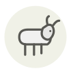

Kid goat
Chevreau
| Latin name | Capra hircus |
|---|---|
| Family | Meat & poultry |
| Origin | Goat dairies, Mediterranean |
| Season (France) | December – May |
| Flavour | Delicate · Mild · Milky · Meaty |
| Typical price (France) | 18–30 €/kg |
What it is
Kid is a by-product of cheese: a goat gives milk only after she has kidded, the male kids are no use to a dairy herd, and they are sold milk-fed at six to twelve weeks — which is why the meat appears in spring and lands on Easter tables from Extremadura to Greece. A milk-fed kid carries almost no fat cover at all, and that absence is the whole difference from lamb.
In the kitchen
With no fat to protect it, roast it covered with a little liquid in the pan or braise it outright — bare in a hot oven a leg is dry in twenty minutes. Reckon on 30 minutes per kilo at 160 °C, basting every ten.
Goes with
Lemon Garlic Rosemary Thyme Olive oil Potato Artichoke Yogurt
Same species
In season alongside
Pauillac lamb Hind Boudin blanc Brousse du Rove Roe deer Fallow deer
Something wrong here, or missing? Tell us